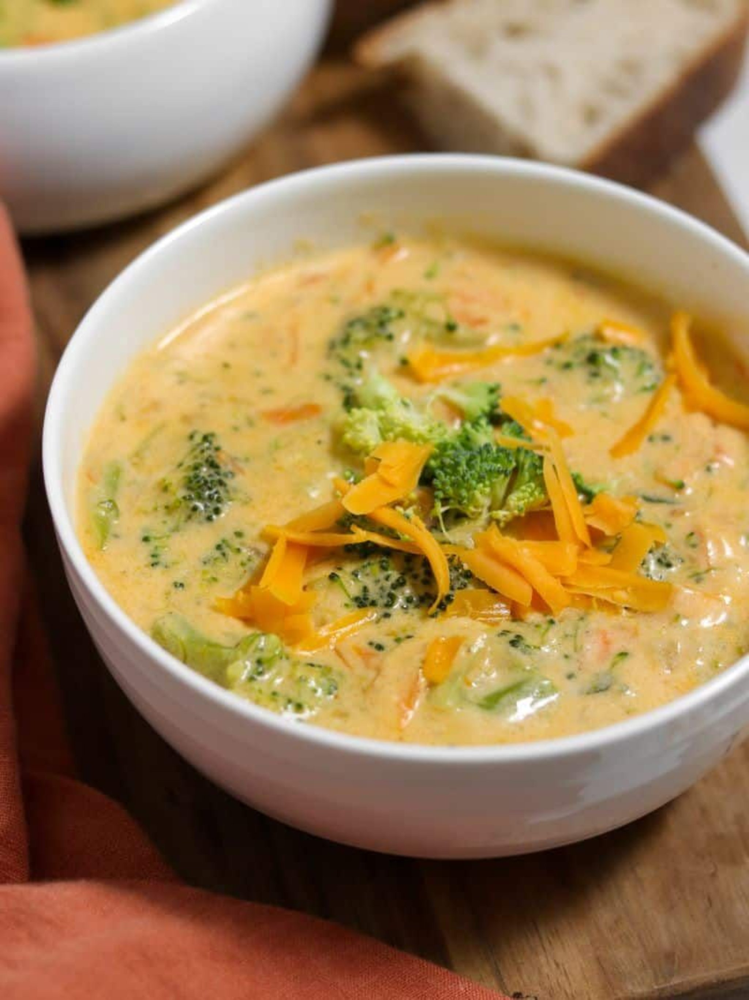

Broccoli Cheddar Soup

Broccoli cheddar soup is a rich and comforting dish made with tender pieces of broccoli blended into a smooth, creamy soup base and combined with melted cheddar cheese. The soup has a thick texture and a savory flavor, where the mild, slightly earthy taste of broccoli balances with the sharp and creamy taste of cheddar.
The recipe is prepared with the following ingredients: onions, garlic, broth, milk, or cream, the soup develops a warm and hearty flavor as it cooks. The melted cheese gives the soup its signature creamy consistency and golden color.
Broccoli cheddar soup is commonly served hot and is often enjoyed with crusty bread (i.e. French baget) or crackers, making it a popular comfort food, especially during colder months.
- Prep Time: 10 mins
- Cook Time: 4 hr and 15 mins
- Total Time: 4 hr 25 mins
- Servings: 8
Note: Double the recipe to increase the serving size